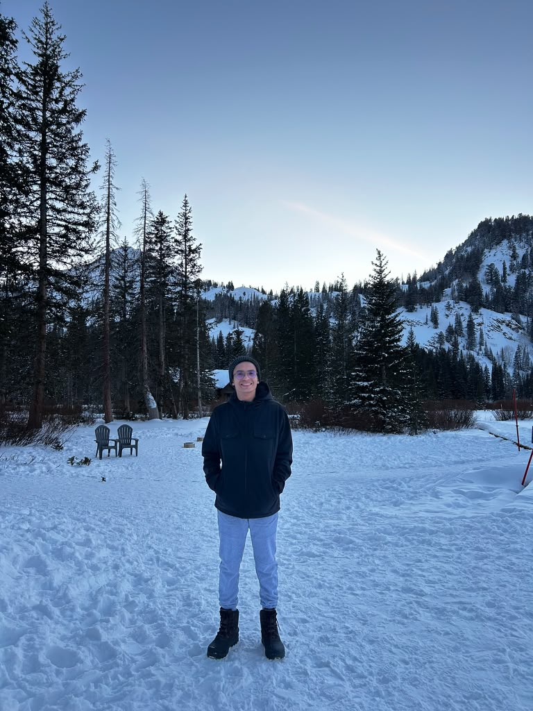

Home
About Me
Hello! My name is Flavio Dias Martins Junior but everyone calls me Junior. I am from Brazil and now I live in Salt Lake City, Utah. I am a student at BYU-Pathway Worldwide working on the Software Development degree. I started with the Web and Computer Programming certificate and I am enjoying learning how websites are built. When I am not studying I like to spend time with my family, listen to music and learn new things about technology. My goal is to work as a web developer and build useful things for people.
Student Photo
